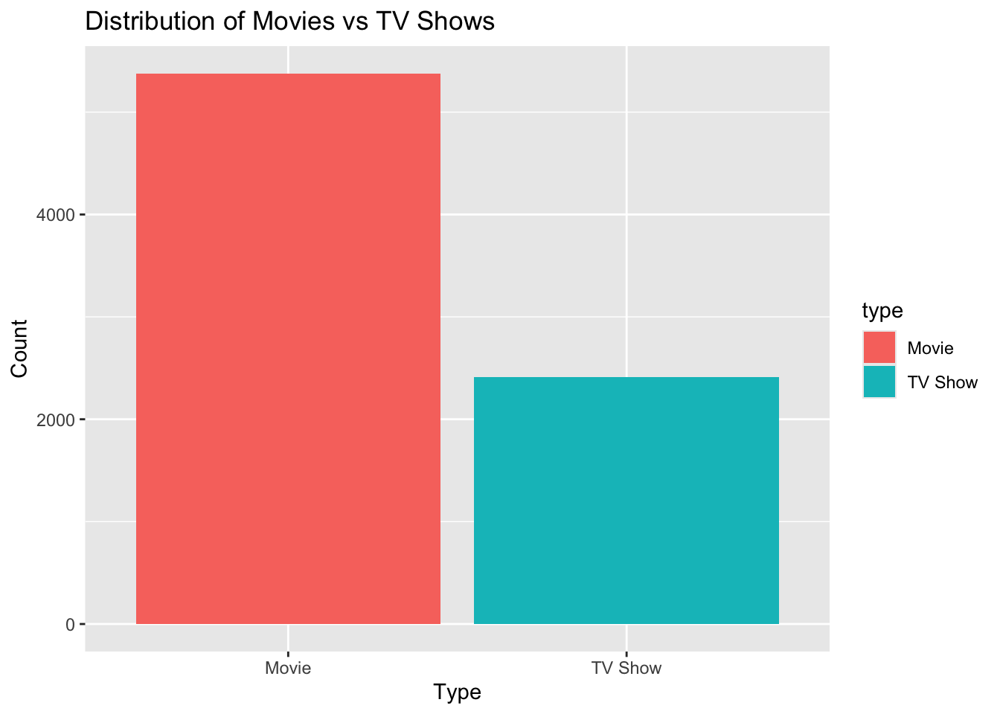
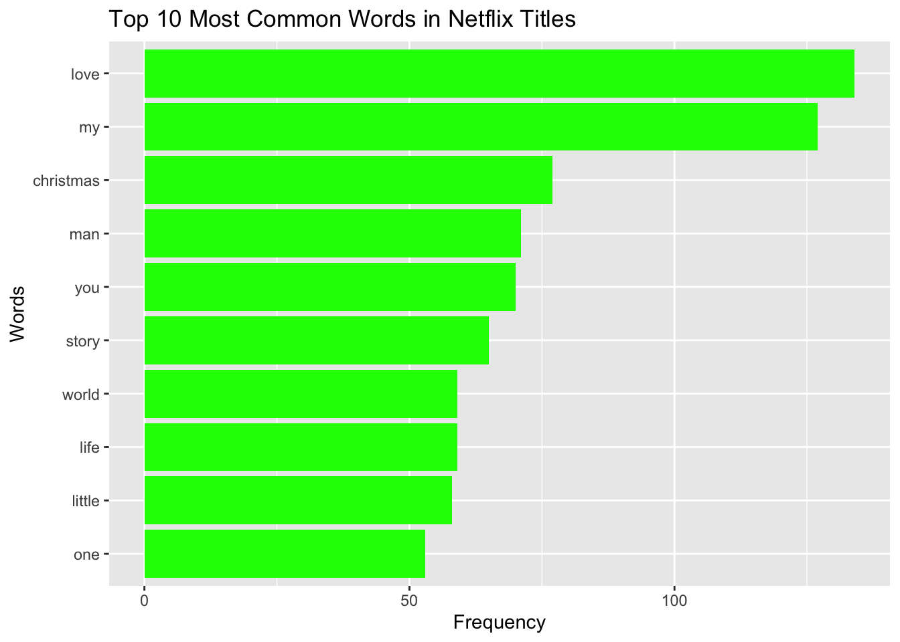

library(tidyverse)
tuesdata <- tidytuesdayR::tt_load('2021-04-20')
netflix <- tuesdata$netflixMini Project 2
This analysis uses data from the Netflix Titles Data Source, which is available through the TidyTuesday github repository.
netflix# A tibble: 7,787 × 12
show_id type title director cast country date_added release_year rating
<chr> <chr> <chr> <chr> <chr> <chr> <chr> <dbl> <chr>
1 s1 TV Show 3% <NA> João… Brazil August 14… 2020 TV-MA
2 s2 Movie 7:19 Jorge Mic… Demi… Mexico December … 2016 TV-MA
3 s3 Movie 23:59 Gilbert C… Tedd… Singap… December … 2011 R
4 s4 Movie 9 Shane Ack… Elij… United… November … 2009 PG-13
5 s5 Movie 21 Robert Lu… Jim … United… January 1… 2008 PG-13
6 s6 TV Show 46 Serdar Ak… Erda… Turkey July 1, 2… 2016 TV-MA
7 s7 Movie 122 Yasir Al … Amin… Egypt June 1, 2… 2019 TV-MA
8 s8 Movie 187 Kevin Rey… Samu… United… November … 1997 R
9 s9 Movie 706 Shravan K… Divy… India April 1, … 2019 TV-14
10 s10 Movie 1920 Vikram Bh… Rajn… India December … 2008 TV-MA
# ℹ 7,777 more rows
# ℹ 3 more variables: duration <chr>, listed_in <chr>, description <chr># Distribution of content type
netflix_type_count <- netflix |>
count(type)
netflix_type_count# A tibble: 2 × 2
type n
<chr> <int>
1 Movie 5377
2 TV Show 2410# Distribution of content release year
netflix_year_count <- netflix |>
count(release_year) |>
arrange(desc(n))
netflix_year_count# A tibble: 73 × 2
release_year n
<dbl> <int>
1 2018 1121
2 2017 1012
3 2019 996
4 2016 882
5 2020 868
6 2015 541
7 2014 334
8 2013 267
9 2012 219
10 2010 173
# ℹ 63 more rowsHere we can see data frames for the amount of movies and TV shows on Netflix from each release year and the amount of Movies and TV shows on Netflix. We can see that there are around double the amount of movies compared to TV shows. There seems to be a trend of more modern TV shows and movies on Netflix.
# Plotting the distribution of content type
ggplot(netflix_type_count, aes(x = type, y = n, fill = type)) +
geom_bar(stat = "identity") +
labs(title = "Distribution of Movies vs TV Shows", x = "Type", y = "Count")
# Plotting the distribution of Release year
ggplot(netflix_year_count, aes(x = release_year, y = n)) +
geom_line() +
labs(title = "Netflix Content Release Year Distribution", x = "Release Year", y = "Count")
Visual represetations of the previous data frames.
# Count titles containing the word "love"
love_count <- netflix |>
filter(str_detect(str_to_lower(title), "love")) |>
summarise(count = n())
love_count# A tibble: 1 × 1
count
<int>
1 175Used str functions str_detect() and str_to_lower() to look for a popular word. Used regular expression “love” to look for the word love in movie and TV titles.
# Titles containing the words "life", "world", or "death"
keywords_titles <- netflix |>
filter(str_detect(str_to_lower(title), "life|world|death"))
keywords_titles# A tibble: 179 × 12
show_id type title director cast country date_added release_year rating
<chr> <chr> <chr> <chr> <chr> <chr> <chr> <dbl> <chr>
1 s150 Movie A Beau… Andrew … Qi S… China,… December … 2011 TV-14
2 s195 Movie A Life… Francis… <NA> Argent… March 20,… 2020 TV-14
3 s310 Movie Addict… Thierry… Anto… France June 12, … 2014 TV-14
4 s325 TV Show After … <NA> Rick… United… April 24,… 2020 TV-MA
5 s379 Movie Alex F… Alex Dí… Alex… Mexico January 2… 2020 TV-MA
6 s399 TV Show Alien … <NA> <NA> United… December … 2020 TV-PG
7 s421 Movie All th… Yibrán … Háns… Mexico January 3… 2020 TV-14
8 s530 Movie Animal… Han Yan Li Y… China September… 2018 TV-MA
9 s544 TV Show Anothe… <NA> Kate… United… July 25, … 2019 TV-MA
10 s559 TV Show Apache… <NA> Balt… Argent… August 16… 2019 TV-MA
# ℹ 169 more rows
# ℹ 3 more variables: duration <chr>, listed_in <chr>, description <chr>Uses regular expression “life|world|death” to search for more possible popular words in move/tv show titles. Returns the entire data frame.
# Count occurrences of each word "life", "world", and "death" in the titles
word_count <- netflix |>
mutate(title_lower = str_to_lower(title)) |>
summarise(
life_count = sum(str_count(title_lower, "life")),
world_count = sum(str_count(title_lower, "world")),
death_count = sum(str_count(title_lower, "death"))
)
word_count# A tibble: 1 × 3
life_count world_count death_count
<int> <int> <int>
1 79 77 24Gives a count for each of the selected words.
# Count the number of occurrences of each director, excluding missing values
popular_directors <- netflix |>
filter(!is.na(director) & director != "") |>
count(director) |>
arrange(desc(n))
# View the top 10 most popular directors
head(popular_directors, 10)# A tibble: 10 × 2
director n
<chr> <int>
1 Raúl Campos, Jan Suter 18
2 Marcus Raboy 16
3 Jay Karas 14
4 Cathy Garcia-Molina 13
5 Jay Chapman 12
6 Martin Scorsese 12
7 Youssef Chahine 12
8 Steven Spielberg 10
9 David Dhawan 9
10 Hakan Algül 8# Separate the cast into individual actors and count their occurrences
popular_actors <- netflix |>
filter(!is.na(cast) & cast != "") |>
separate_rows(cast, sep = ", ") |>
count(cast) |>
arrange(desc(n))
# View the top 10 most popular actors
head(popular_actors, 10)# A tibble: 10 × 2
cast n
<chr> <int>
1 Anupam Kher 42
2 Shah Rukh Khan 35
3 Naseeruddin Shah 30
4 Om Puri 30
5 Akshay Kumar 29
6 Takahiro Sakurai 29
7 Amitabh Bachchan 27
8 Boman Irani 27
9 Paresh Rawal 27
10 Yuki Kaji 27# Separate the country column into individual countries and count their occurrences
popular_countries <- netflix |>
filter(!is.na(country) & country != "") |>
separate_rows(country, sep = ", ") |>
count(country) |>
arrange(desc(n))
# View the top 10 most popular countries
head(popular_countries, 10)# A tibble: 10 × 2
country n
<chr> <int>
1 United States 3296
2 India 990
3 United Kingdom 722
4 Canada 412
5 France 349
6 Japan 287
7 Spain 215
8 South Korea 212
9 Germany 199
10 Mexico 154This code performs three different tasks of counting occurrences of directors, actors, and countries, and then displaying the top 10 most popular in each category. It filters out missing or empty values and splits data where necessary (such as for actors and countries with multiple entries separated by commas).
It was very interesting to see the large amount of Indian actors appearing in tv shows/movies compared to the total amount of Indian movies. Perhaps there is a fewer supply of popular actors in Bollywood compared to Hollywood in the United States.
netflix_lowercase_titles <- netflix |>
mutate(lower_title = str_to_lower(title))
#Use regular expressions to extract words and exclude those containing digits
netflix_words <- netflix_lowercase_titles |>
separate_rows(lower_title, sep = "\\s+") |>
filter(!str_detect(lower_title, "\\d"))
#Remove common words that are not of interest
common_words <- c("the", "and", "in", "of", "to", "a", "is", "for", "with", "on", "at", "by", "an", "from", "i", "&")
netflix_words_final <- netflix_words |>
filter(!is.element(lower_title, common_words))
#Count the frequency of each word
popular_words <- netflix_words_final |>
count(lower_title, sort = TRUE)
head(popular_words, 10)# A tibble: 10 × 2
lower_title n
<chr> <int>
1 love 134
2 my 127
3 christmas 77
4 man 71
5 you 70
6 story 65
7 life 59
8 world 59
9 little 58
10 one 53popular_words |>
head(10) |>
ggplot(aes(x = reorder(lower_title, n), y = n)) +
geom_bar(stat = "identity", fill = "green") +
coord_flip() +
labs(title = "Top 10 Most Common Words in Netflix Titles",
x = "Words",
y = "Frequency")
This data frame and graph show the top 10 most common words used in Netflix titles. I excluded common conjunction words such as “the”, “and”, or “of”. I also used the regular expressions \d and \s+ to filter out digits and whitespace. My early prediction of “love”, “life”, “world” all being popular words in titles turned out to be true. However, “death” did not make the top 10.